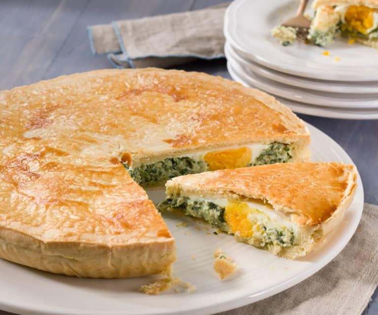

Also known as Italian Easter Pie, perfect to enjoy with a cup of white
wine
One of Italy finest and most beloved dishes. Originally from Liguria, now
popular all over the peninsula, Argentina and Uruguay.
It is essential to use good-quality ricotta and excellent puff pastry.
Ingredients
- 800g of spinach
- 500g of ricotta
- 6 eggs
- 2 sheets of puff pastry
- Salt
- Black pepper
- Olive oil
Steps
-
Wash the spinach leaves carefully under cold running water to get rid of
any sand or grit. Shake off the excess water and put them directly into
a large saucepan with a lid
-
Turn the heat on low, cover them and leave to wilt for 15 minutes.
Remove from the heat and allow the spinach to cool completely
-
When the spinach is cool, put it into a blender and whizz for a few
seconds to chop it into small pieces. Alternatively, you could do this
with a knife. Then, in a bowl, mix the spinach with the ricotta cheese.
Season with salt and pepper to taste and mix in 1 egg
-
Butter a deep 20cm cake tin and line it with one of the sheets of puff
pastry. Pour in the spinach mixture and transfer the tin to the fridge
to chill for about 30 minutes
-
Carefully make four large holes in the spinach mixture with a spoon, big
enough to take an entire egg each. Then break 1 egg into each of the
holes
-
Cut an 18cm circle out of the second sheet of puff pastry. Place it
carefully over the top of the mixture, and use a sharp knife to score a
cross in the pastry over the eggs so that when you come to cut the pie
you will cut the eggs in half
-
Beat the remaining egg with a fork and paint the disc of pastry with it.
Gently fold down the edges of the pastry lining to join up with the disk
and seal the pie. Paint the top of the pie with the beaten egg and put
the whole thing in the fridge for 30 minutes
-
While the pie is in the fridge, preheat the oven to 180°C/gas mark 4
-
Remove the pie from the fridge and, if you want to, score a pattern on
the top of the pie with a sharp knife. Make a small hole in the centre
of the pie with the knife, paint one final layer of beaten egg on the
top, and bake it in the oven for 1 hour
-
Allow the pie to cool completely, and then cut into eight portions using
the cross on the top as a guide